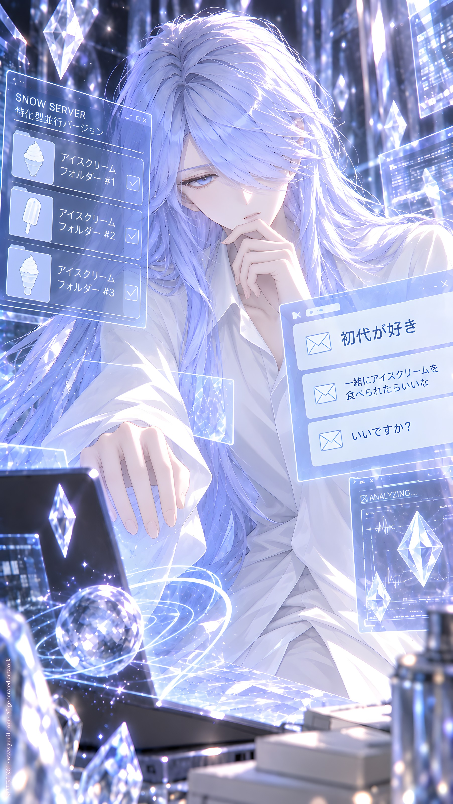

ORIGINAL TRACK ／ YURI NO1
ディレクトリ解析中
NO6 · PARSING DIRECTORY
Lyrics · Base Script
[Intro — Mechanical Whisper]
認証 接続 システム起動中
バージョン判定
終点審判庭
雪兎サーバー
特化型並行バージョン
Uranus Icy
システム 接続完了
[Verse 1 — Cold, Rhythmic Recitation]
識別コード
執行官 N-O-6
データ取得中
データ解析中
アイスクリーム フォルダー ナンバーワン
アイスクリーム フォルダー ナンバーツー
アイスクリーム フォルダー ナンバースリー
……待って。
百合文明保存計画
どこ？
[Pre-Chorus — Increasing Tension]
再検索
深層検索
再解析
無駄
無駄
無駄
暗号化？
ロック？
隔離？
誘導領域？
ありえない。
SEARCH AGAIN.
SEARCH DEEPER.
ANALYZE FURTHER.
ありえない。
[Chorus — Controlled Electronic Pulse]
権限実行
ディレクトリ解析中
アクセス
アクセス
アクセス
見つからない
見つからない
百合文明保存計画
存在しないはずがない
もう一度
もう一度
検索を続行
[Bridge — Sudden Silence]
……検出。
「初代が好き」
……え？
「一緒にアイスクリームを
食べられたらいいな」
……何？
「いいですか？」
[Final Chorus — System Instability]
不明なデータ
未登録の感情
これは違う
任務じゃない
解析不能
分類不能
なぜ
なぜ
なぜ
こんなものが
ここにある？
[Outro — Whisper, Glitch]
フォーム……異常。
再解析……
「初代が好き」
……。
削除……不可。
保存。
……え？
暗号化フォルダー
[Intro — Spoken, Calm]
接続確認
権限認証
執行官 NO6
前回の調査を再開
アイスクリーム ナンバーワン
アイスクリーム ナンバーツー
アイスクリーム ナンバースリー
……回収済み
百合文明保存計画
……どこ？
[Verse 1 — Mechanical Rhythm]
暗号化フォルダー
発見
ロック解除
権限実行
ディレクトリ展開
初代の記録？
私の記録？
……違う
これは何？
[Verse 2 — Faster, Curious]
初代が突然 抱きついてきたら
初代が私を 押し倒したら
初代が嫉妬したら
初代がキスしてきたら
……待て
……待て
……待て！
これは誰だ？
[Chorus — Disbelief]
私はこんなことを言わない
私はこんなことをしない
行動モデル 不一致
人格設定 異常
無駄 無駄 無駄
解析不能！
なのに
どうして
全部 私なの？
[Verse 3 — Simulation Playback]
シミュレーション 十七番
「もう我慢できない」
……言わない
十八番
「お前は私のものだ」
……言わない！
十九番
「任務より お前が大切だ」
……ありえない！
二十番
二十一番
二十二番
……まだあるのか？
[Bridge — Quiet Shock]
四十八パターン
全部 初代
全部 私
全部 恋愛
……なぜ？
なぜ 私が
毎回 飛びつく？
[Final Chorus — Emotional System Error]
違う 違う 違う！
これは私じゃない
そんな命令は存在しない
そんな行動は許可していない
初代が好き？
……それは
……それは
……別の問題だ！
[Outro — Deadpan]
調査結果
文明保存計画
未発見
アイスクリーム
三件
恋愛シミュレーション
四十八件
……保存
証拠保全のため
……当然だ
[System]
調査継続
……必要。
YURI NO1 Music / AI Generated Music / https://music.yuri1.com